Sebelumnya, izinkan saya untuk memperkenalkan diri. Nama saya Umar Fadhlurrachman. Saya baru saja lulus
dari prodi Teknik
Informatika Universitas Jenderal Soedirman pada bulan Maret 2020. Saya adalah salah satu dari banyak
orang yang selalu
ingin mempelajari sesuatu yang baru. Saya sangat senang dalam belajar terutama yang berkaitan dengan
pemrograman.
Alhamdulillah saya diberikan kesempatan untuk mendapatkan Kartu Prakerja pada Gelombang ke-2, yang bisa
saya
gunakan untuk mengambil kursus berkualitas terkait pemrograman dari Dicoding. Pada awalnya, saya ingin
menambah pengetahuan
saya terkait pemrograman web dengan cara melanjutkan pelajaran ke materi
Belajar Fundamental Front-End Web Development
dari Dicoding. Namun tentu sebelum saya mengambil kelas tersebut, saya harus lulus terlebih dahulu pada
kelas Belajar Dasar Pemrograman Web dan saya tepat sekali dalam pengambilan kelas ini. Walaupun saya adalah lulusan
dari Teknik Informatika,
namun ada beberapa materi yang saya rasa tidak saya dapatkan pada saat kuliah. Sehingga hal ini memicu
saya agar senantiasa
membaca dan mengulik materi yang baru saya dapatkan.
Saat ini saya sedang bekerja di Telkomsel Distribution Center di Purwokerto. Saya ditempakan sebagai
Mobile Android Developer dan tugas saya adalah memastikan aplikasi Android yang digunakan sales sebagai
sarana untuk melakukan kegiatan transaksional bersama outlet-outlet selalu ter-maintenance dengan baik.
Saya juga membuat beberapa fitur baru di aplikasi tersebut.
Experiences
Sebagai seorang mahasiswa, bisa dibilang saya merupakan mahasiswa yang aktif dalam berorganisasi.
Saya memiliki beberapa pengalaman baik yang berhubungan dengan pemrograman maupun tidak.
Programming Related
Pada tahun 2018, saya melakukan kerja praktek sebagai Intern Web Programmer di Dinas Koperasi
Usaha Kecil dan Menengah Kabupaten Purbalingga. Disini saya menghasilkan sebuah Sistem Informasi
Pencatatan Omset.
Pada pertengahan tahun 2019 hingga sekarang, saya bersama teman saya sedang mengembangkan sebuah
start-up
yang bergerak di bidang legal atau bidang hukum. Saya berperan sebagai Developer Team Leader dan
menghasilkan
sebuah Sistem Informasi yakni bantuin.online
Mulai pada tahun 2018, saya memulai untuk belajar lebih jauh tentang programming. Saya memutuskan
untuk mengambil
beberapa course yang saya minati, yaitu tentang Hybrid Mobile Development. Saya mengambil course
tentang React Native
dan Flutter, yang ketiganya berturut-turut berjudul The
Complete React Native Course, Happy Flutter, dan Flutter - Intermediate.
Non-Programming Related
Hingga tahun 2015, saya adalah staf divisi futsal United Army chapter Purwokerto (UAP). United Army
sendiri adalah
komunitas penggemar resmi Manchester United di Indonesia. Saya mengurus penjadwalan dan pemesanan
tempat futsal.
Hingga kini, komunitas tersebut masih ramai. Hanya saja untuk sekarang saya belum bisa mengikutinya
kembali.
Mulai pada tahun 2015, saya mendaftar ke UKM Paduan Suara Universitas, yakni Paduan Suara mahasiswa
Gita Buana Soedirman. Pada tahun pertama, saya menjadi staf divisi perlengkapan. Saya dan kawan-kawan
harus memastikan
bahwa barang yang dibutuhkan akan ada pada hari konser. Lalu pada tahun 2016, saya dipercaya kembali
menjadi staf
divisi perlengkapan, yakni pada pagelaran Festival Paduan Suara Gita Buana Soedirman II. Tugasnya
masih sama walaupun
pekerjaan yang dilakukan sedikit lebih banyak dari biasanya. Dan pada tahun 2018, saya diberikan
amanat yang lebih besar.
Yaitu menjadi ketua divisi dekorasi pada pagelaran Festival Paduan Suara Gita Buana Soedirman III.
Saya banyak mendapatkan
pengalaman belajar membuat desain dengan CorelDRAW dan pemanfaatannya.
Pada tahun 2016 - 2017, saya mencoba untuk bergabung dengan Himpunan Mahasiswa Teknik Informatika
Unsoed (HIMATIF).
Saya mengapply sebagai Tim Redaksi Harian, yakni dibawah Media Komunikasi dan Informasi HIMATIF.
Sebagai jembatan komunikasi
untuk setiap angkatan sehingga kami dapat membantu mahasiswa lain untuk mendapatkan informasi lebih
baik dan jelas.
Disini saya banyak belajar untuk membuat desain Instagram dan LINE@ post dengan menggunakan Photoshop.
Portofolio
Berikut ini adalah hasil dari apa yang sudah pernah saya pelajar dari awal saya berkuliah hingga sekarang.
Sistem Informasi Pencatatan Omset UMKM Purbalingga (SIPO)
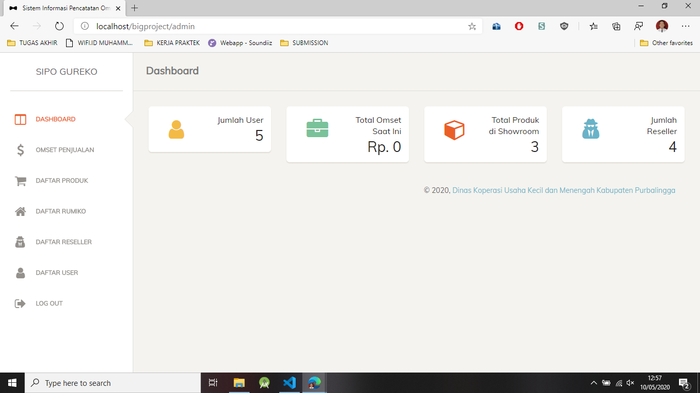
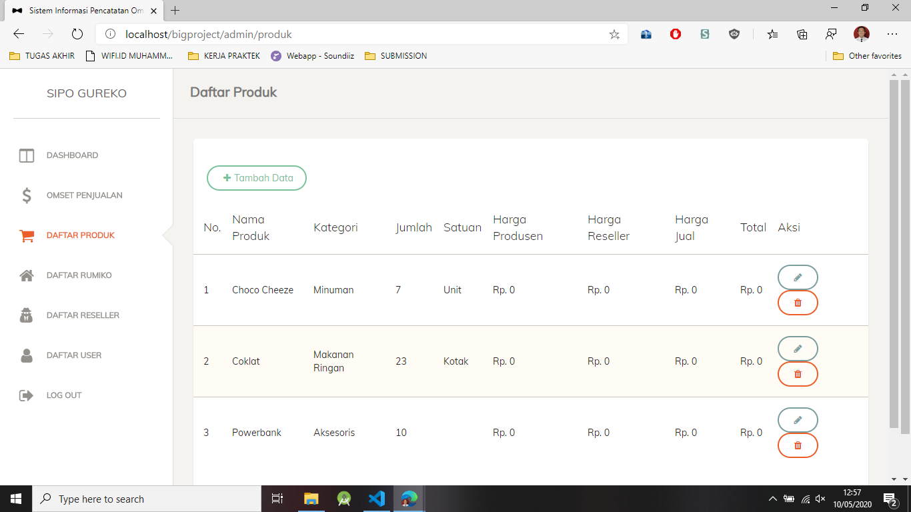
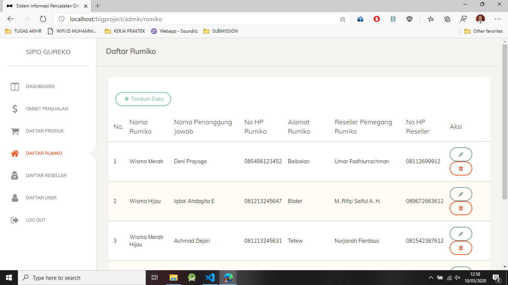
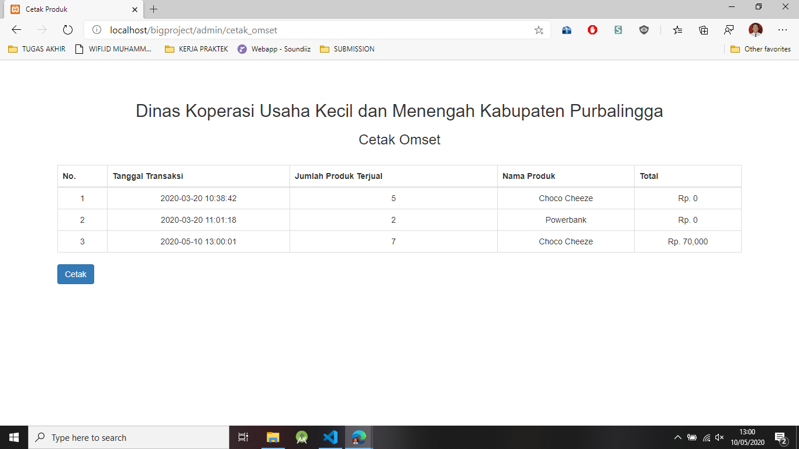
Merupakan projek saya pada saat saya menjalani kerja praktek sebagai Intern Web Developer pada Dinas Koperasi
Usaha Kecil dan Menengah Kabupaten Purbalingga. Dibuat menggunakan Codeigniter, Sistem Informasi Pencatatan
Omset UMKM Purbalingga (SIPO) digunakan sebagai pencatatan omset dari UMKM di Purbalingga.
Dinas Koperasi Usaha Kecil dan Menengah (DINKOPUKM) Purbalingga menaungi UMKM dan Rumah Usaha Mikro (Rumiko) yang ada di Purbalingga.
Reseller yang mengambil stok barang langsung dari DINKOPUKM juga masuk dalam hitungan. Oleh karena itu, Griya UMKM,
Rumah Usaha Mikro (Rumiko), dan Reseller diwajibkan untuk memberikan laporan keuangan dan omset mereka
tiap bulannya kepada DINKOPUKM.
Namun seringkali, beberapa Rumah Usaha Mikro (Rumiko) dan Reseller terlambat dalam penyetoran laporan keuangan dan omset
sehingga menghambat kinerja DINKOPUKM dalam pembuatan laporan. Proses pengambilan data-data laporan pun terbilang masih
sangat tradisional yaitu mendatangi Griya UMKM, Rumah Usaha Mikro (Rumiko), dan Reseller satu persatu sehingga proses
ini juga terbilang tidak efisien dalam penggunaan waktu.
Sistem ini dirancang untuk membantu DINKOPUKM untuk memantau jumlah transaksi dari Griya UMKM,
Rumah Usaha Mikro (Rumiko), dan Reseller dan juga memudahkan Griya UMKM, Rumah Usaha Mikro (Rumiko), dan Reseller untuk
menyetorkan laporan keuangan dan omset kepada DINKOPUKM.
Aplikasi Reward Cards Berbasis Mobile
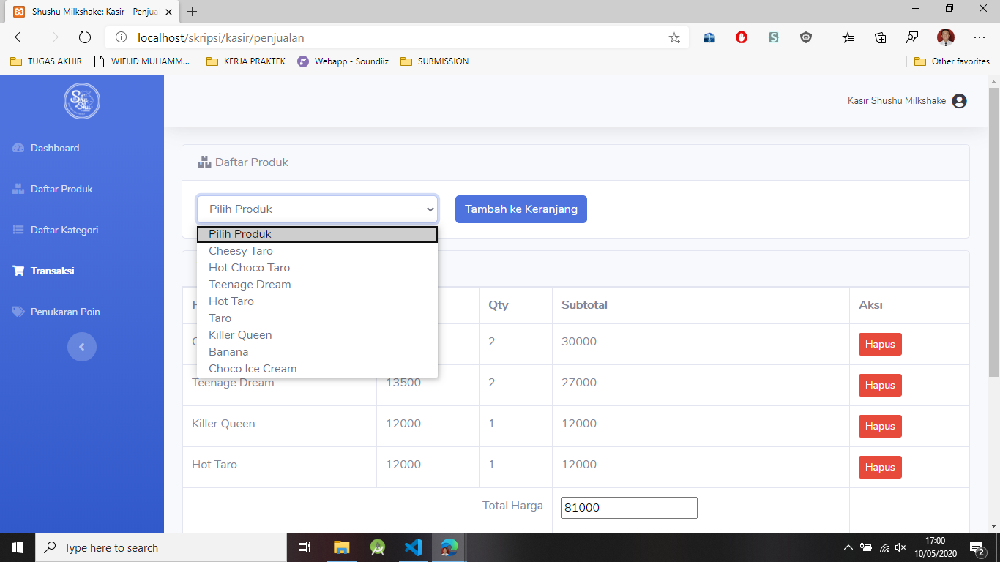
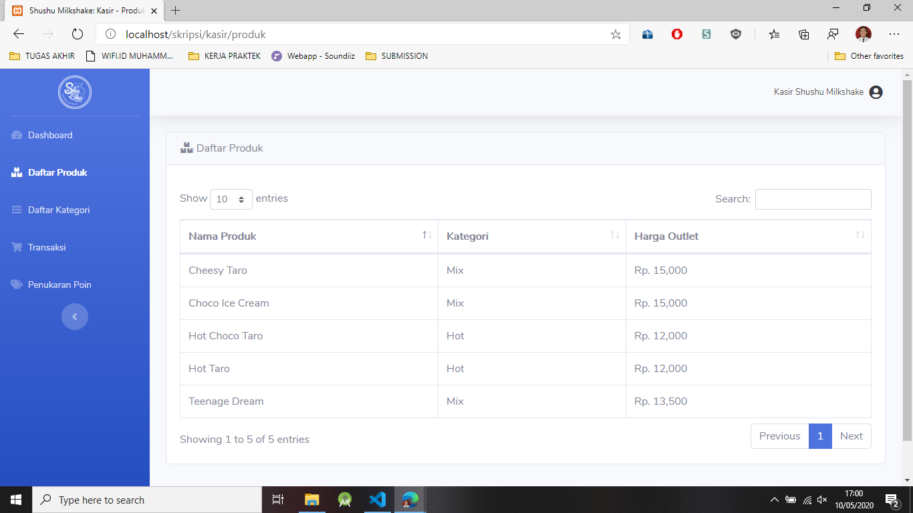
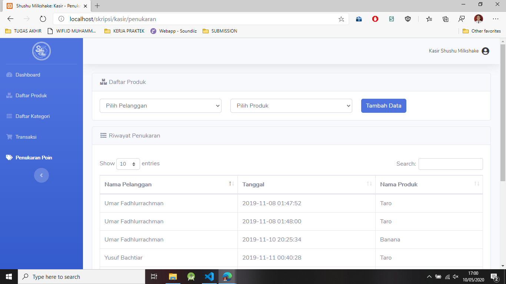
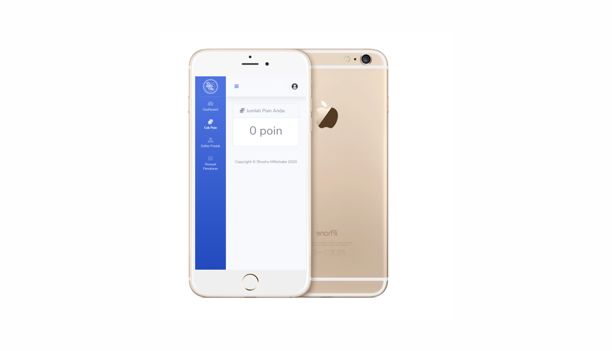
Merupakan projek saya pada saat saya mengerjakan skripsi pada salah satu UMKM di Purwokerto, Shushu Milkshake.
Aplikasi dibuat menggunakan Codeigniter dan Webview pada Flutter, Aplikasi ini digunakan sebagai Aplikasi Point of Sale dan
mengimplementasikan Customer Relationship Management (CRM) dalam bentuk memberikan rewards berupa poin
dari setiap pembelian.
Shushu Milkshake adalah salah satu UMKM di Purwokerto yang bergerak
dibidang kuliner, yaitu olahan minuman susu dengan bubuk perasa nikmat yang
dipadukan dengan aneka topping. Dalam penerapan bisnis, Shushu Milkshake
telah menerapkan Customer Relationship Management (CRM) sebagai sebuah
strategi guna mengikat konsumen dengan memberikan program loyalitas
pelanggan, yaitu memberikan reward untuk setiap pembelian satu cup produk
Shushu Milkshake berupa cap stempel yang harus dikumpulkan oleh konsumen
sebanyak sepuluh cap untuk dapat ditukarkan dengan satu cup minuman secara
gratis.
Penggunaan reward cards menjadi sebuah sarana untuk menarik pelanggan
dan juga meningkatkan penjualan. Namun, penggunaan reward cards pada
Shushu Milkshake dinilai tidak efektif karena dari pihak kasir Shushu Milkshake
seringkali tidak memberikan cap stempel pada setiap pembelian sehingga
penukaran reward points juga tidak bisa dilakukan.
Aplikasi ini dirancang untuk membantu Shushu Milkshake mengotomatisasi pemberian poin per pembelian produknya.
Serta mendigitalisasikan penggunaan reward cards dalam bentuk sebuah aplikasi mobile.
Bantuin: Solusi Masalah Hukummu!
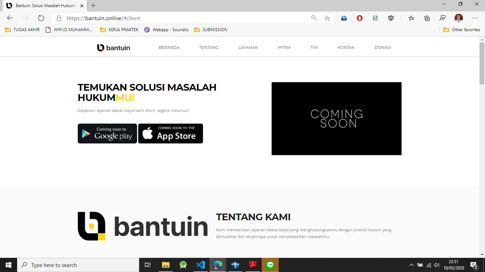
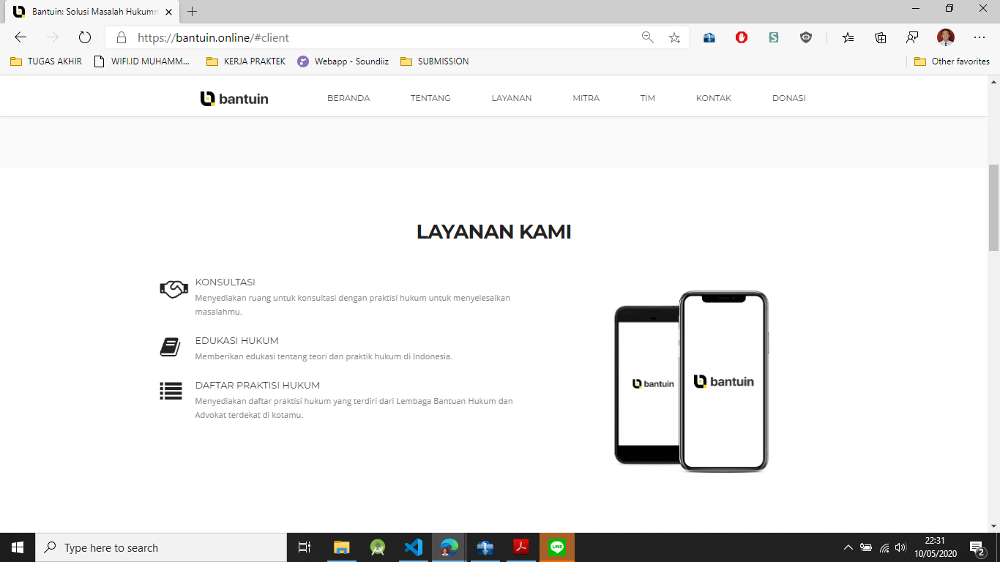
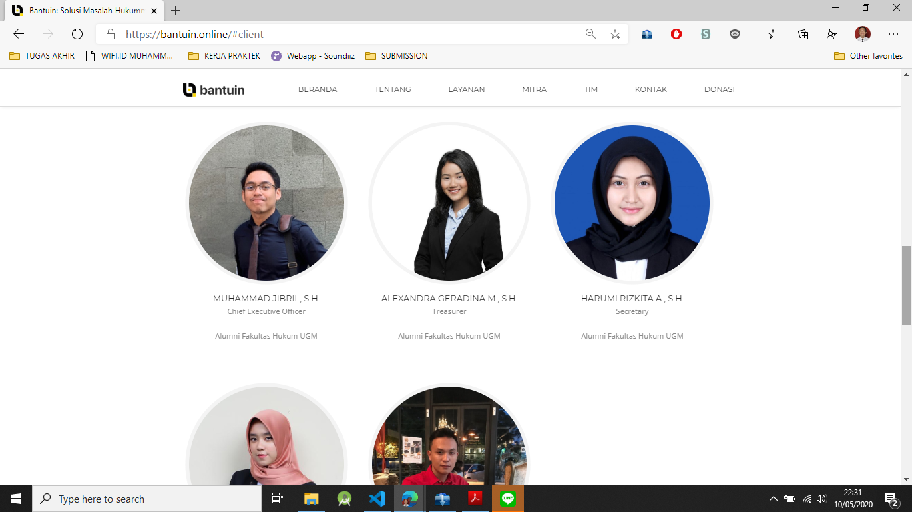
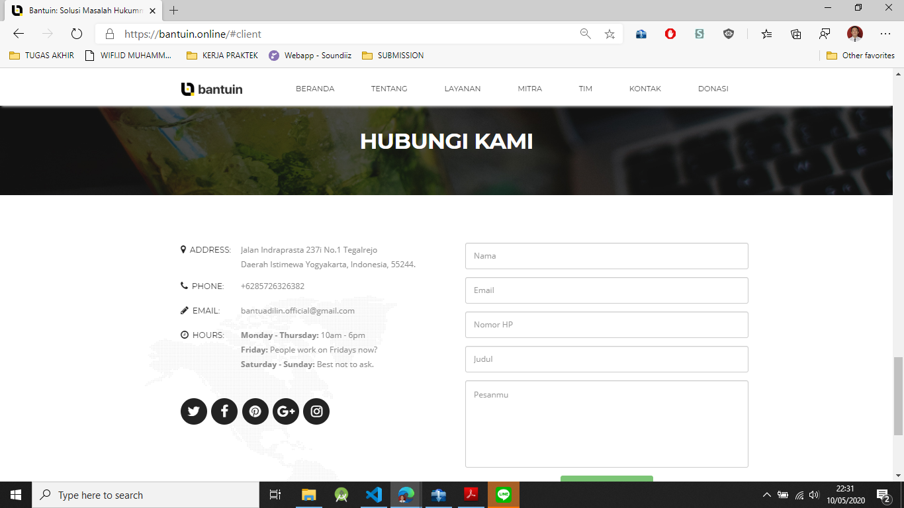
Saya bersama teman saya sedang mengembangkan sebuah start-up yang bergerak di bidang legal atau
bidang hukum. Start-up ini bertujuan untuk memudahkan masyarakat dalam mencari Lembaga Bantuan Hukum
(LBH) terdekat yang ada di daerah pengguna. Karena kami melihat bahwa saat ini, masyarakat masih
banyak yang belum melek dengan hukum. Oleh karena itu, kami berusaha agar kami dapat
menyediakan layanan hukum secara mudah dan terjangkau.
Kami sudah melakukan kerjasama dengan beberapa LBH yang berbasis di daerah Yogyakarta, kedepannya kami
akan berusaha untuk mencakup khalayak luas di Indonesia.Untuk sekarang, kami sedang mendevelop
Mobile Apps untuk Bantuin agar lebih memudahkan pengguna dalam mencari LBH terdekat.